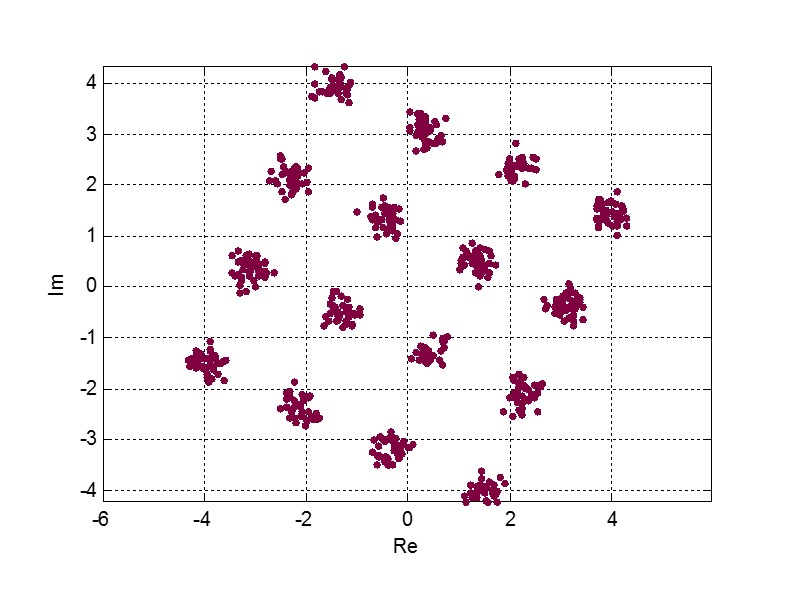
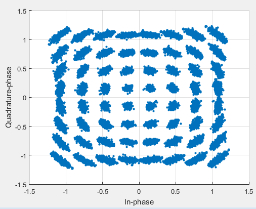

NR - Phase Tracking Reference Signal (PTRS)
Table of Contents
Introduction
Targetting for the great goal of the 5th generation (5G) system, the new radio (NR) system, proposed by the 3rd generation partner project (3GPP), has employed a variety of cutting-edge technologies, including advanced channel coding schemes, e.g., low density parity code (LDPC) and polar code, higher-order modulation schemes, e.g., 256QAM, etc. Considering the fact that the lower frequency spectrum has already been so crowded and overutilized, NR decided to explore higher frequency band, e.g., million meter wave (mmWave). After all, much richer spectrum resources are available at higher frequency bands than lower frequency spectrum.
As is well-known, high frequency transmission suffers severe attenuation loss in the propagation, which remarkably limits the effective coverage and transmission distance. Fortunately, higher frequency spectrum has shorter wave length. Given an aperture size, much more antennas can be equipped in higher frequency transmission than those in lower frequency transmission. In this way, more antennas can yield larger beamforming gain and complement the attenuation loss in the transmission over the higher frequency bands. In a word, higher frequency enables the dense deployment of antennas, i.e., massive multi-input multi-output (M-MIMO), or equivalently large-scale MIMO (LS-MIMO); while M-MIMO extends the transmission distance and coverage of the higher frequency bands. Therefore, M-MIMO and higher frequency transmission are usually jointly utilized and have been the focus of the research and discussion in the 3GPP standardization.
Generally, an oscillator always produces phase noise, which is essentially an impairment of the oscillator. Nevertheless, the phase noise soars as the operation frequency grows. In the NR system, which operates on higher frequency spectrum, the impact of phase noise cannot be ignored. Instead, the phase noise must be accurately estimated and complemented before data detection. To this end, a dedicated reference signal, termed phase tracking reference signal (PTRS) has been proposed to track the fluctuation of the phase noise.
This report intends to cover everything detail relating to PTRS. The remaining of this report is structured as follows. Section Phase Noise and Models briefly introduces the models of phase noise, and Section Presence and Density provides the configuration of PTRS, including its presence and density in the time and frequency domain. The number of PTRS supported is given in Section Port Number. The PTRS port association follows in Section Port Association. Then, resource mapping and sequence generation are presented in Section Resource Mapping and Sequence Generation respectively. In Section Phase Noise Estimation and Complementation, the methodology of phase noise estimation and complementation are described in details. Finally, Section Summary summarizes the report.
For clear description, following denotation conventions are adopted throughout the document. \(\otimes\) is the operator of circular convolution.
Phase Noise and Models
As its name implies, a phase noise model is utilized to depict the behavior and the property of the phase noise. In fact, phase noise modelling plays an extremely important role in the estimation and complementation of the phase noise as well as the design of PTRS.
In order to accurately describe the variation and fluctuation of the phase noise in a statistic sense, phase noise modelling was intensively discussed. Based on the numerous measurement and evaluation of the realistic phase noise, there were totally 11 models proposed in RAN1 meeting #85. Finally, targetting for fair performance evaluation and comparison of different candidate designs and solusions, the phase noise modelling converged into 4 mainstream models \cite{r1-164041, r1-165005, r1-163984, mmmagic}.
Without loss of generality, we take one OFDM symbol for instance to reveal the impact of phase noise. The actual output of an oscillator can be denoted by
\begin{align} \widetilde{x}(n) = x(n) \cdot \exp[j\phi(n)], \label{eq:pn-time} \end{align}where \(x(n)\) is the desired signal without any contamination of phase noise and \(\phi(n)\) the time-varying phase noise at time instant \(n\), \(n = 1, 2, \ldots, N\), where \(N\) is the FFT size for the OFDM symbol. After FFT, the equation (\ref{eq:pn-time}) becomes
\begin{align} \widetilde{X}(k) &= X(k) \otimes \Phi(k) \nonumber \\ &= X(k) \cdot \Phi(0) + \sum_{i=1, i\neq k}^NX(i) \cdot \Phi(k - i), \label{eq:pn-freq} \end{align}where \(\widetilde{X}(k)\), \(X(k)\), and \(\Phi(k)\) are respectively the FFT of \(\widetilde{x}(n)\), \(x(n)\), and \(\exp[j\phi(n)]\), i.e.,
\begin{align*} \widetilde{X}(k) &= \sum_{n=1}^N \widetilde{x}(n) \cdot \exp\left(j\frac{2\pi}{N}kn\right) \\ X(k) &= \sum_{n=1}^N x(n) \cdot \exp\left(j\frac{2\pi}{N}kn\right) \\ \Phi(k) &= \sum_{n=1}^N \exp\left\{j\left[\phi(n) + \frac{2\pi}{N}kn\right]\right\}. \end{align*}According to (\ref{eq:pn-freq}), the influence of phase noise can be divided into two aspects, a multiplicative \(\Phi(0)\) and an additive \(\sum_{i=1, i\neq k}^NX(i) \cdot \Phi(k - i)\), termed common phase error (CPE) and inter-carrier interference (ICI) respectively. For CPE, it essentially rotates the whole constellation with \(\Phi(0)\), and Figure 1 illustrates the impact on a 16QAM constellation. A 64QAM constellation impacted by ICI can be illustrated by Figure 2.

Figure 1: A 16QAM constellation contaminated by CPE

Figure 2: A 64QAM constellation contaminated by ICI
From system performance perspective, CPE is more harmful than ICI, and is prioritized to be complemented. Its frequency-flat property gives rise to its dense distribution in the time domain and sparse scattering in the frequency domain.
Presence and Density
Downlink
- If phaseTrackingRS in DMRS-DownlinkConfig is configured,
- If RNTI equals MCS-C-RNTI, C-RNTI, or CS-RNTI,
- If at least timeDensity or frequencyDensity in PTRS-DownlinkConfig is configured, the time domain density (LPT-RS) is a function of scheduled MCS (see Table 1), and frequency domain density (KPT-RS) is a function of scheduled bandwidth (see Table 2). If not configured, the default values, LPT-RS = 1, KPT-RS = 2, apply.
- If neither of timeDensity and frequencyDensity in PTRS-DownlinkConfig is configured,
- For QPSK or scheduled bandwidth < 3 RB's, PTRS is not present;
- Else, LPT-RS = 1, KPT-RS = 2.
- If RNTI equals RA-RNTI, SI-RNTI, or P-RNTI, PTRS is not present.
- If RNTI equals MCS-C-RNTI, C-RNTI, or CS-RNTI,
- Else, PTRS is not present.
| Scheduled MCS | LPT-RS |
|---|---|
| IMCS < ptrs-MCS1 | Not present |
| ptrs-MCS1 ≤ IMCS < ptrs-MCS2 | 4 |
| ptrs-MCS2 ≤ IMCS < ptrs-MCS3 | 2 |
| ptrs-MCS3 ≤ IMCS < ptrs-MCS4 | 1 |
| Scheduled bandwidth | KPT-RS |
|---|---|
| NRB < NRB0 | Not present |
| NRB0 ≤ NRB < NRB1 | 2 |
| NRB1 ≤ NRB | 4 |
Uplink - CP-OFDM
- If phaseTrackingRS in DMRS-UplinkConfig is configured,
- If RNTI equals MCS-C-RNTI, C-RNTI, CS-RNTI, or SP-CSI-RNTI,
- If at least timeDensity or frequencyDensity in PTRS-UplinkConfig is configured, the time domain density (LPT-RS) is a function of scheduled MCS (see Table 1), and frequency domain density (KPT-RS) is a function of scheduled bandwidth (see Table 2). If not configured, the default values, LPT-RS = 1, KPT-RS = 2, apply.
- If neither of timeDensity and frequencyDensity in PTRS-UplinkConfig is configured, LPT-RS = 1, KPT-RS = 2.
- Else, PTRS is not present.
- If RNTI equals MCS-C-RNTI, C-RNTI, CS-RNTI, or SP-CSI-RNTI,
- Else, PTRS is not present.
Uplink - DFT-S-OFDM
- If transformPrecoderEnabled in PTRS-UplinkConfig is configured,
- If timeDensityTransformPrecoding is configured to 2, LPT-RS = 2;
- Else, LPT-RS = 1.
- With sampleDensity configured, the group pattern of PTRS is a function of scheduled bandwidth (see Table 3).
| Scheduled bandwidth | Group number | Group size |
|---|---|---|
| NRB0 ≤ NRB < NRB1 | 2 | 2 |
| NRB1 ≤ NRB < NRB2 | 2 | 4 |
| NRB2 ≤ NRB < NRB3 | 4 | 2 |
| NRB3 ≤ NRB < NRB4 | 4 | 4 |
| NRB4 ≤ NRB | 8 | 4 |
Some Miscellaneous for CP-OFDM
- Threshold ptrs-MCS4 is not explicitly configured, and it equals the lowest MCS level for retransmission.
- For retransmission, the time-domain density is determined by the MCS in the initial transmission.
- Given a minislot comprising of L OFDM symbols, if LPT-RS ≥ L, PTRS is not present.
Port Number
In essence, as mentioned before, phase noise is generated by an oscillator. The number of PTRS port in the downlink and uplink depends on the number of oscillator as well as the concrete implementation of the gNB and the UE, respectively. Therefore, it is not necessary to configure a PTRS port for each DMRS port. Instead, one or more DMRS ports corresponding to one oscillator can share one PTRS port.
Downlink
In NR release 15, there is at most only one PTRS port in the downlink.
Uplink
CP-OFDM
In CP-OFDM case, there are up to two PTRS ports, indicated by maxNrofPorts in PTRS-UplinkConfig.
If a UE supports full-coherent transmission, only single PTRS port is supported if present.
Non-codebook based transmission
The actual number of PTRS port is determined by sounding reference signal resource indicator (SRI), since each SRS resource is configured with a PTRS port index by ptrs-PortIndex in SRS-Config, if phaseTrackingRS is configured in DMRS-UplinkConfig.
Codebook-based transmission
In partial-coherent or non-coherent case, the actual number of PTRS ports depends on TPMI and/or TRI in DCI format 0-1.
- PTRS port 0 is shared by SRS port 1000 and 1002.
- PTRS port 1 is shared by SRS port 1001 and 1003.
DFT-S-OFDM
For DFT-S-OFDM, only single-layer transmission is supported. Hence, at most one PTRS port is present.
Port Association
If a PTRS port is shared by more than one DMRS ports, the PTRS port and the DMRS ports are Type-A and Type-D QCLed. Theoretically, the PTRS can be associated and mapped to any one of the corresponding DMRS ports. However, for the sake of precise phase noise estimation, irrespective of downlink or uplink, a PTRS port is expected to be transmitted over the DMRS port with the best radio condition.
Downlink
In order to facilitate the PTRS port association, a UE reports a layer index (LI) to its serving gNB, which indicates the index of the layer with best quality.
With LI at hand, a gNB can always associate the PTRS port to the DMRS port with the best channel quality. Moreover, for the purpose of signalling overhead reduction, a gNB can permute and reorder the precoding vectors until the lowest indexed DMRS port has the most excellent channel quality. Clearly, the operation is a completely gNB implementation related issue without any specification effort. To sum up, the PTRS port is associated to a unique DMRS port as follows.
- In single-codeword case, the PTRS port is assocated to the lowest-indexed DMRS port.
- For double-codeword, the PTRS port is associated to the lowest-indexed DMRS port corresponding to the codeword with highest MCS level.
Uplink
The association between PTRS ports and DMRS ports is signalled by the field of PTRS-DMRS assocation in DCI format 0-1.
- If at least one of the following condition is satisfied, PTRS-DMRS assocation is not present.
- CP-OFDM: PTRS-UplinkConfig is not configured.
- DFT-S-OFDM
- maxRank = 1
- Else, 2-bit PTRS-DMRS assocation is present (see Tables 4 and 5 for one and two PTRS ports, respectively)
| Value | DMRS port |
|---|---|
| 0 | 1st scheduled DMRS port |
| 1 | 2nd scheduled DMRS port |
| 2 | 3rd scheduled DMRS port |
| 3 | 4th scheduled DMRS port |
| Value of MSB | DMRS port | Value of LSB | DMRS port | |
|---|---|---|---|---|
| 0 | 1st DMRS port which shares PTRS port 0 | 0 | 1st DMRS port which shares PTRS port 1 | |
| 1 | 2nd DMRS port which shares PTRS port 0 | 1 | 2nd DMRS port which shares PTRS port 1 |
Resource Mapping
CP-OFDM
The target subcarriers for PTRS mapping can be expressed as
\begin{align*} k = k_\text{ref}^\text{RE} + (iK_\text{PT-RS} + k_\text{ref}^\text{RB})N_\text{sc}^\text{RB}, \quad i = 0, 1, \ldots, \end{align*}where
- \(k_\text{ref}^\text{RE}\) is subcarrier-level offset, indicated by resourceElementOffset in PTRS-DownlinkConfig as shown in Table 6.
| DMRS antenna port | resourceElementOffset | \(k_\text{ref}^\text{RE}\) for type-1 DMRS | \(k_\text{ref}^\text{RE}\) for type-2 DMRS |
|---|---|---|---|
| 1000 | 00 | 0 | 0 |
| 01 | 2 | 1 | |
| 10 | 6 | 6 | |
| 11 | 8 | 7 | |
| 1001 | 00 | 2 | 1 |
| 01 | 4 | 6 | |
| 10 | 8 | 7 | |
| 11 | 10 | 0 | |
| 1002 | 00 | 1 | 2 |
| 01 | 3 | 3 | |
| 10 | 7 | 8 | |
| 11 | 9 | 9 | |
| 1003 | 00 | 3 | 3 |
| 01 | 5 | 8 | |
| 10 | 9 | 9 | |
| 11 | 11 | 2 | |
| 1004 | 00 | - | 4 |
| 01 | - | 5 | |
| 10 | - | 10 | |
| 11 | - | 11 | |
| 1005 | 00 | - | 5 |
| 01 | - | 10 | |
| 10 | - | 11 | |
| 11 | - | 4 |
- \(k_\text{ref}^\text{RB}\) is PRB-level offset.
DFT-S-OFDM
In DFT-S-OFDM case, PTRS samples are inserted before DFT operation, a.k.a. pre-DFT. Given a OFDM symbol with PTRS, PTRS samples are divided into a series of chunks/groups and then scattered in the PUSCH samples prior to DFT. The pattern depends on the number of samples in each group (\(N_\text{samp}^\text{group}\)) and the number of group (\(N_{\text{group}}^{\text{PT-RS}}\)), as shown in Table 7, where letters \(M, H, T\) mean the PTRS group is respectively inserted in the middle, head, and tail of the corresponding PUSCH sample segment.
| \(N_\text{samp}^\text{group}\) | Pattern |
|---|---|
| 2 | \(\underbrace{M\ldots M}_{N_{\text{group}}^{\text{PT-RS}}}\) |
| 4 | \(H\underbrace{M\ldots M}_{N_{\text{group}}^{\text{PT-RS}}-2}T\) |
Sequence Generation
DFT-S-OFDM
PTRS samples are generated according to \[ r_m(m^{\prime}) = w(k^{\prime}) \frac{1 + j}{\sqrt{2}}[1 - 2c(m^{\prime})]e^{j\frac{\pi}{2}(m \mod 2)}, \] where
- \(c(\cdot)\) is a Gold sequence initialized with \(c_{\text{init}} = [2^{17}(N_{\text{symb}}^{\text{slot}} n_{s,f}^{\mu} + \ell + 1)(2N_{\text{ID}} + 1) + 2 N_{\text{ID}}] \mod 2^{31}\).
- \(m\) is the global index of a PTRS sample with PUSCH samples considered.
- \(m^{\prime} = N_{\text{samp}}^{\text{group}} s^{\prime} + k^{\prime}\) is the intra-sequence index of a PTRS sample.
- \(s^{\prime} = 0, 1, \ldots, N_{\text{group}}^{\text{PT-RS}} - 1\) are the indices of PTRS groups.
- \(k^{\prime} = 0, 1, \ldots, N_{\text{samp}}^{\text{group}} - 1\) are the intra-group indices of samples.
- \(w(\cdot)\) is the orthogonal cover code (OCC) for port multiplexing purpose, which is essentially a Walse code of length \(N_{\text{samp}}^{\text{group}}\), implicitly indicated by \(n_{\text{RNTI}} \mod N_{\text{samp}}^{\text{group}}\).
CP-OFDM
On each PTRS subcarrier, the QPSK symbol of the assocated DMRS port on the same subcarrier is reused and placed on the PTRS RE's.
Phase Noise Estimation and Complementation
Due to its non-selective nature in the frequency domain, phase noise is estimated in the frequency domain through the whole bandwidth scheduled, and then interpolation is performed in the time domain for the CP-OFDM or DFT-S-OFDM symbols without PTRS. The procedure is different for different waveforms. Hence, the procedure is presented in details for CP-OFDM based and DFT-S-OFDM based transmission, respectively.
CP-OFDM
For clear description, taking a PTRS port for instance, we suppose that a PTRS symbol \(x_{m, n}\) is transmitted over its associated DMRS port on a RE \((k_m, l_n)\), which corresponds to subcarrier \(k_m\) and OFDM symbol \(l_n\), i.e.,
\begin{align} y_{k_m, l_n} = H_{k_m, l_n} e^{j\theta_{l_n}} x_{m,n} + n_{k_m, l_n}, \quad m = 1, 2, \ldots, M; n = 1, 2, \ldots, N, \end{align}where \(y_{k_m, l_n}\), \(H_{k_m, l_n}\), and \(n_{k_m, l_n}\) are the received signal, channel fading, and the additive white Gaussian noise on RE \((k_m, l_n)\), respectively; \(\theta_{l_n}\) represents the phase noise on \(l_n\) th OFDM symbol.
Since phase noise fluctuates as time, the impairment of phase noise can be completely complemented by a phase difference relative to a reference. Without loss of generality, we identify the phase noise on the first PTRS symbol as the reference, and the phase noise on the symbol is zero, i.e. \(\theta_{l_1} = 0\). Then, the phase noise on PTRS symbol \(l_n\) can be estimated according to
\begin{align} \hat{\theta}_{l_n} = \arg \sum_{m=1}^M \dfrac{y_{k_m, l_n}x_{m, n}^*}{y_{k_m, l_1}x_{m, 1}^*}, \quad n = 2, 3, \ldots, N. \end{align}Then, if the time density of the PTRS is less than 1, i.e., \(L_\text{PTRS} > 1\), the phase noise of the OFDM symbols without PTRS can be obtained by interpolation.
DFT-S-OFDM
In DFT-S-OFDM case, which is different from CP-OFDM waveform, the PTRS samples are inserted into PUSCH samples before the DFT operation, i.e., in the time domain. Accordingly, the phase noise should also be estimated and complemented in the time domain, i.e., after the IDFT processing. Taking \(X\) PTRS groups/chunks with each comprised of \(K\) samples for instance, the received signal can be expressed as
\begin{align} r_{m, g, l_n} = h_{m, g, l_n} e^{j\theta_{m, g, l_n}} x_{m, g, l_n} + n_{m, g, l_n}, \quad m = 1, 2, \ldots, K; g = 1, 2, \ldots, X, \end{align}where the subscript tuple \((m, g, l_n)\) means \(m\) th sample position within \(g\) th PTRS group in DFT-S-OFDM symbol \(l_n\); accordingly, \(x_{m, g, l_n}\), \(\theta_{m, g, l_n}\), \(r_{m, g, l_n}\), \(h_{m, g, l_n}\), and \(n_{m, g, l_n}\) are the PTRS sample, the phase noise, the received signal (after IDFT), the effective channel fading and the effective additive white Gaussian noise at the sample position.
Then, the phase noises can be estimated by \[ \theta_{m, g+1, l_n} - \theta_{m, g, l_n} = \arg \frac{\sum_{m=1}^K r_{m, g+1, l_n} x_{m, g+1, l_n}^{*}}{\sum_{m=1}^K r_{m, g, l_n} x_{m, g, l_n}^{*}}, \quad g = 1, \ldots, X - 1. \]